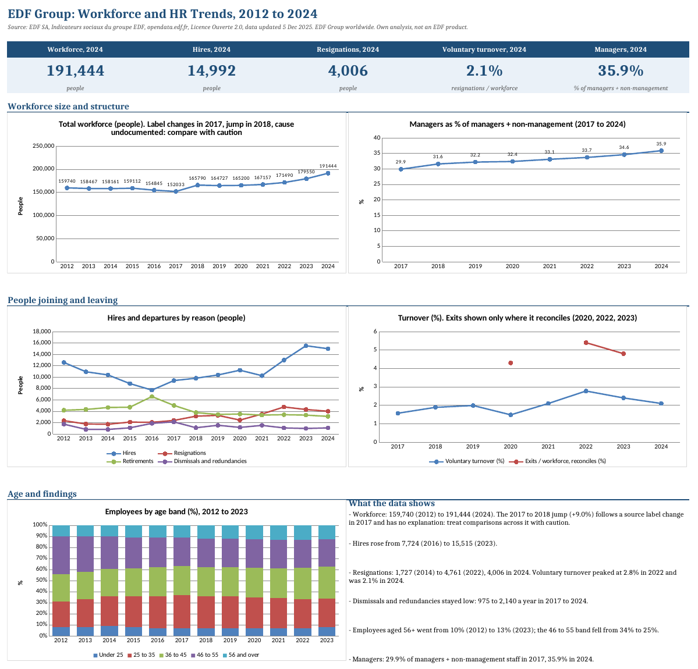
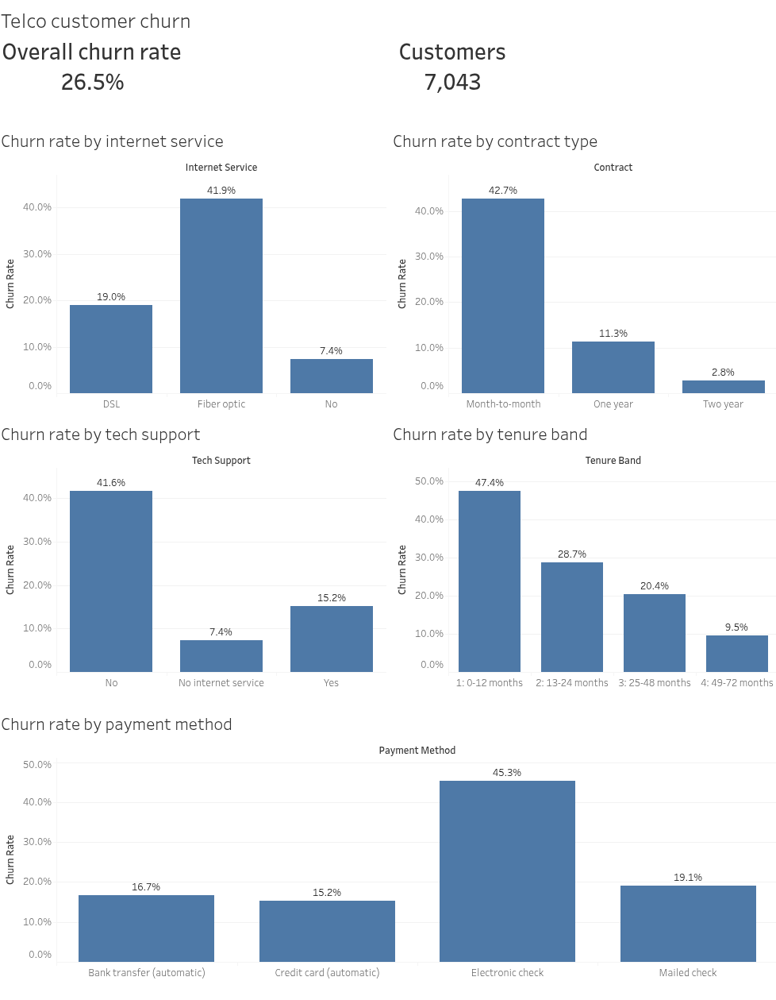

Rana Ashraf
Junior Data Analyst
I use SQL, Power BI, Python and Excel to explore data and turn business questions into clear reports.
About me
I am a Sociology graduate from Ain Shams University (2024), based in Cairo. After graduation, I completed a Data Analysis Diploma at EraaSoft and developed project experience in data cleaning, SQL querying, data modeling and dashboard creation. I am seeking my first junior Data Analyst role or internship.
Tools & capabilities
- Analytics & reporting
- Power BI, DAX, Power Query, KPI dashboards
- Data preparation
- MySQL, joins, subqueries, CTEs, Python
- Modeling & Excel
- Star schema, Excel, Google Sheets
Selected work
Selected projects
Each project combines data preparation, report design and business interpretation. Tap a report image to enlarge it.
PROJECT 01 · MySQL · Power BI · DAX · Data modeling
E-Commerce Sales Analysis
I cleaned and transformed sales data in MySQL, designed a star schema, and built a six-page Power BI report covering products, customers, regions, shipping, discounts and profitability.
Saved report exports, not a live report. Findings describe the project dataset, not measured business improvements.
View portfolio repository →PROJECT 02 · Python · Power BI · DAX · Financial KPIs
Financial Performance Analysis
I used Python to prepare financial data and built a seven-page Power BI report comparing TMGH, PHDC and OCDI across Q3 2021 to Q2 2026. The report explores profitability, cash flow, liquidity and leverage.
Saved report exports, not a live report. Monetary units and time basis are not verified. Historical project analysis, not investment advice.
View portfolio repository →PROJECT 03 · Power BI · Power Query · KPI analysis
Sales & Customer Analysis
I used Power BI and Power Query to explore historical sales, products, customers and markets. The dataset contains 2,823 sales records across 307 distinct order numbers.
Saved report screenshots, not a live report. The order-count card counts records rather than distinct orders. Sales currency is not specified.
View portfolio repository →PROJECT 04 · Python · SQL · Excel · HR indicators
HR Workforce Analysis
I used Python to organise HR indicators published by EDF and SQL to answer questions on hiring, resignations and age distribution, then built an Excel dashboard. Differences found in the published figures are recorded, not corrected.

Source: EDF SA, Indicateurs sociaux du groupe EDF (opendata.edf.fr), Licence Ouverte 2.0, data last updated 5 December 2025. My own analysis, not an EDF product and not endorsed by EDF. Published indicators, not company-internal data. The 2017 to 2018 workforce jump follows an undocumented change in the source and is flagged in the workbook. Saved image of an Excel dashboard; findings describe the dataset, not business results.
PROJECT 05 · Python · Tableau · Customer churn
Telecom Customer Churn Analysis
I analysed churn in the public IBM Telco sample dataset (7,043 customers, 26.5% churn) with Python and built a Tableau dashboard comparing churn by contract, tenure, internet service, tech support and payment method.

Image of the dashboard published on Tableau Public. Synthetic IBM sample data (Apache 2.0). Differences between groups are associations, not proven causes.
View the live dashboard on Tableau Public →PROJECT 06 · Python · SQL · Power BI · DAX · Marketing funnel
Marketing Funnel Analysis
I cleaned and modelled 8,000 marketing leads and 842 won deals published by Olist with Python and SQL into a star schema, and built a five-page Power BI report with DAX measures covering leads, win rate, channels, segments and seller GMV.
Source: Marketing Funnel by Olist and Brazilian E-Commerce Public Dataset by Olist (Kaggle), CC BY-NC-SA 4.0, credit Olist. Real anonymised data; it has no ad spend, so no ROAS or cost metrics. Saved report export, not a live report; findings describe the dataset, not measured business results.
View the report file and details →Education & training
- 2024
- BA in Sociology, Faculty of Arts, Ain Shams University
- Completed
- Data Analysis Diploma, EraaSoft: Excel, Power BI, SQL and Python
- Completed
- Digitera Bootcamp, Business Track, EraaSoft × iCareer
- Completed
- ICDL Certificate, Microsoft Office
Let's connect
Open to junior roles & internships
I am looking for an opportunity to apply my project skills, learn from an experienced team and contribute to useful analysis.